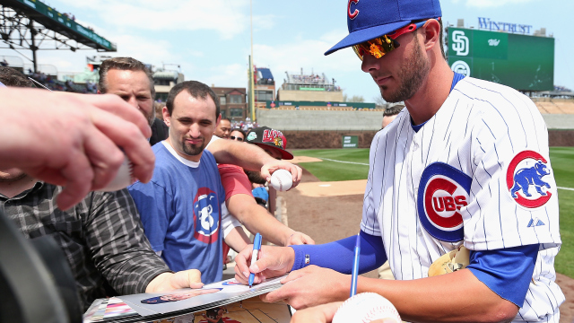

In the summer I enjoy playing baseball for my travel baseball team on the Warren Park Warriors. I have trained my whole life to become a Now that I am in high school, I made it onto the Lane Tech baseball team as well.
I have been playing baseball ever since I was five years old. The game of baseball is one of the best games to play and is also one of the best games to watch. I have developed a passion for the game.
I have been playing chess ever since I was five years old. I have been playing competively since I second grade and have been playing in chess tournaments ever since. I have won many awards since I have started playing. On of my most memorial awards would be when I took first place in the city or 14th place in the state. I have developed a passion for the game I also play for Lane Techs chess team.